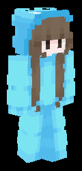

ツインズ
# ティア
# 属性
# バリア獲得条件
# 使用中に反応するトリガー
# バフ
データベース
英語表記：Twins
特性肩書：撹乱分身変化
相手の撹乱に特化したウェポンの一つ。
アイテムを使用したときに、自分の位置にもう一人の自分を召喚する。
0.4秒後に動き始めるこの双子は、召喚時の方向の向きに依存し、連動して動く。
真反対に動かすにはアイテム使用後即座に180度回転する必要がある。
さらに左クリックを使うことで20ブロック以内であれば双子の座標までテレポートできる。
双子に矢を当てた敵は、一瞬目の前が真っ暗になる。
ただしこの双子は奈落に落ちるとデスポーンする。
他のウェポンより長けている点は、近距離戦において明らかに勝機をみいだせる点。
クールダウン：12秒
集合クールダウン：2秒
集合可能距離：20ブロック
双子の継続時間：20秒
盲目：2秒
擬態モデル
ウェポン調整履歴
PHASE-05
・集合トリガーを左クリックからスニークに変更 (調整)
PHASE-06
・集合を一度きりに変更 (弱体化)
・集合可能距離を20mから10mに変更 (弱体化)
・集合の音を座標上発生に変更 (調整)
・効果時間を2秒短縮 (弱体化)
・クールタイムを3秒延長 (弱体化)
・分身生成時に一瞬透明化できるように (強化)
PHASE-07
・鎧がない時にCTを15秒から10秒に (強化)
ウェポンページへ戻る